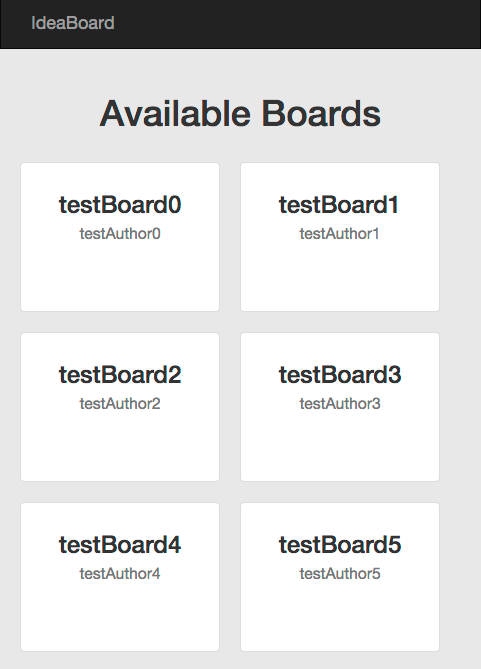
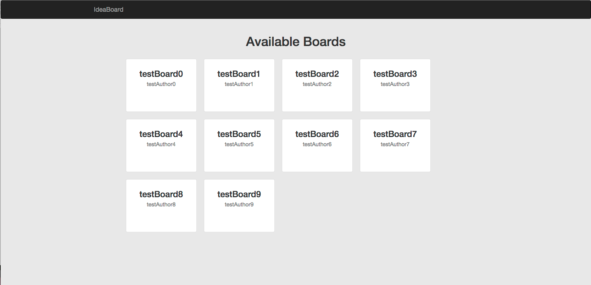
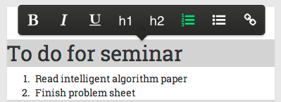
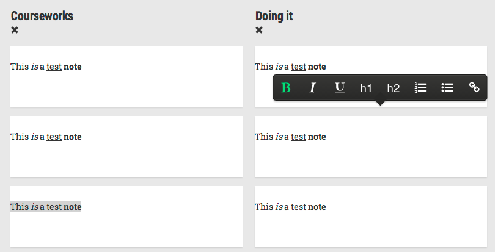
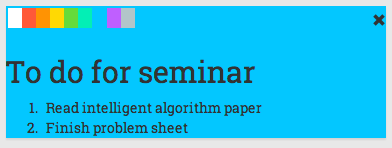

Creating a responsive user interface with HTML5, CSS3 & JavaScript
Use of an HTML template engine and standard elements such as web controls or widgets
Role-based security and logging for improved management of information security
Declarative validation of user input
Asynchronous web server communication and updates
XML or JSON formatted data import & export
Rich content, embedded audio and video, interactive graphics
JavaScript libraries / frameworks for single page applications
Object-relational mapping tools to simplify database coding
Web patterns and frameworks such as model-view-controller
Automated tools for testing accessibility and portability
Database transactions for isolation and consistency
Performance management and scalability
Mohammad Ali Khan (mak1g11)
Michael Terry (mrt1g11)
Both
Architecture
For our application, we split it to two basic parts: the front-end and the back-end. In our design, we wanted the backend to just serve as a RESTful API for our front-end, returning JSON objects which would be manipulated front-end. The RESTful API server would also need to be able to carry out POST, PUT and DELETE functions in addition to GET functions. With this in mind, we set to making creating our server.
We decided to implement a client server architecture, where the client uses a RESTful API to communicate with the server. This is because:
We wanted the the users to be able to access their notes from anywhere.
A RESTful API back-end is uncoupled from the front-end implementation, this allows any other front-end implementation. This is important as in the future we may build a native mobile application which can use the same back-end as the web application.
RESTful API's are much more simple to interact with than alternatives such as soap
Back end
Technologies
The main technology we decided to use to create our backend was node.js. This was chosen over a number of technologies such as the MVC ASP.NET and Java Play Frameworks. These two focused a lot more work on server-side and was too heavy-weight for a simple RESTful API. Moreover, node.js was a technology we were working with on our Group Development Project so we also viewed using this as a perfect opportunity to learn a new technology while killing two birds with one stone.
Model
For our application, we designed three main structures: Boards, Columns and Notes. A board would have a name, the name of its author and colour, for customisation purposes. Moreover, it would have a list/number of columns. Each column in a board would have a name and a list/number of notes. Lastly, each note would have a title, the note content and colour. A diagram can be seen below:
Database
As mentioned previously in the brief, we were still considering which database to use for our application. The two choices had been MongoDB and SQL. SQL seemed to fit our design well, and both of us were more comfortable with it, both having used it before. With this in mind, we set to create our tables. Using our models from above, we created Board, Column and Note tables. Column linked to Board with a BoardID as a foreign key and Note linked to a column in the same way. Our table can be seen below.
CREATE DATABASE ideaBoard;
USE ideaBoard;
CREATE TABLE User
(
user_id INT NOT NULL AUTO_INCREMENT,
email VARCHAR(50) NOT NULL,
UNIQUE(user_id),
UNIQUE(email),
PRIMARY KEY(user_id)
);
CREATE TABLE Board
(
board_id INT NOT NULL AUTO_INCREMENT,
user INT NOT NULL,
FOREIGN KEY (user) REFERENCES User(user_id),
name VARCHAR(100) NOT NULL,
UNIQUE(board_id),
PRIMARY KEY(board_id)
);
CREATE TABLE Board_Column
(
board_column_id INT NOT NULL AUTO_INCREMENT,
board INT NOT NULL,
FOREIGN KEY (board) REFERENCES Board(board_id),
title VARCHAR(100),
UNIQUE(board_column_id),
PRIMARY KEY(board_column_id)
);
CREATE TABLE Note
(
note_id INT NOT NULL AUTO_INCREMENT,
board_column INT NOT NULL,
FOREIGN KEY (board_column) REFERENCES Board_Column(board_column_id),
content TEXT,
UNIQUE(note_id),
PRIMARY KEY(note_id)
);
However, once we started to prototype our application, it was discovered that it would be extremely tricky to work with node.js and MySQL. It was certainly not impossible, but the amount of work required to make things work was deemed too costly to justify using an SQL database. Instead, a document-based database would be ideal, and this was available in the form of MongoDB. Therefore, we switched to MongoDB. In Mongo, we tried to initially just use one document for each record, meaning a board document, containing its values and a list of column documents which in turn contained note documents. The schema of this can be scene below
var ideaboardSchema = new Schema(
{
id : ObjectID,
name : String,
author : String,
colour : String,
columns : [
{
id : ObjectID,
name : String
notes: [
{
id : ObjectID,
title : String,
content : String,
colour : String
}...
]
}...
]
}
);
This seemed to be a good idea but we faced some trouble while making this work as retrieving individual notes or columns within the inner values was tricky. One could easily retrieve the whole list but doing that to make change to only document inside the list was considered inefficient and wasteful. Instead, the design of our database was more or less similar to the SQL one, with the ids of boards stored in column documents etc. The final schema is as follows.
var boardSchema = new Schema(
{
id : ObjectID,
name : String,
author : String,
colour : String
}
);
var columnSchema = new Schema(
{
id : ObjectID
name : String,
board : ObjectID
}
);
var noteSchema = new Schema(
{
id : Object ID,
name : String,
content : String,
colour : String,
column : ObjectID
}
);
Design
The design of our server was pretty simple. As mentioned before, the back-end was present to server the
GET
,
PUT
,
POST
and
DELETE
requests from our web application. To be able to do this, we designed our routes with our structures in mind. We wanted to be able to display all the boards we had, and then, if needed, a specific board requested with id. This would also apply to the columns and notes belonging to each board. With this in mind, we created a number of routes which can be seen below.
Using
/boards
will return a list of all the boards contained in the database. If we enter an id next,
/boards/:boardId
, this will give us a board with the requested id. Moivng on,
/boards/:boardId/columns
would give us a list of columns, and calling an id on that will give us a specific column. Lastly, using
/boards/:boardId/columns/:columnId/notes
and adding
/:noteId
to it will give us the notes and a specific note within this board column respectively.
Server
Inspiration
The creating of the node server was done with the help of a
tutorial
which involved creating a wine factory.
Structure
Making a RESTful API also involved making use of different, useful node modules. The two modules used in our application were mongo and express modules. Mongo was obviously used to communicate with our database while
Express
is a lightweight node.js web application framework, providing the basic HTTP infrastructure to easily to create REST APIs. It allows us to set which methods would be called by each of the requests that we mentioned in our design. An example of this is assigning a get request to
/boards/
to call the method to retrieve a list of all the different boards.
The tutorial had just one table of wines in their collection, but we had three. With that in mind, we created methods for retrieving, editing and deleting database records. These were written into separate files and imported in the main server file for modularity and a nicer structure.
Database operations
Connecting to database
We added a separate file which handles connecting with the database. This way, we only connect to our database once when start our server, calling
db.openDabase()
.
var mongo = require("mongodb");
var Server = mongo.Server,
Db = mongo.Db,
BSON = mongo.BSONPure;
var server = new Server('localhost',27017, {auto_reconnect: true});
exports.openDatabase = function(dbName){
db = new Db(dbName,server);
db.open(function(err, db){
if(!err){
console.log("Connected to '" +dbName+ "' database ");
db.collection('boards',{strict:true}, function(err, collection){
if(err){
console.log("The 'boards' collection doesn't exist. Creating it with sample data...");
populateDB();
}
});
}
});
};
The db file also contains a method to create sample data, which was initially used for testing purposes
It is a simple and elegant function to create records to our liking
var populateDB = function(){
var boards = [];
var columns = [];
var notes = [];
for(var i = 0; i<5;i++){
var boardId = new BSON.ObjectID();
boards.push({
_id: boardId,
name:"testBoard"+i,
author:"testAuthor"+i,
colour:"testColor"+i
});
var tempColumns = [];
for(var j = 0;j < 5; j++){
var columnId = new BSON.ObjectID();
columns.push(
{
_id: columnId,
board:boardId,
name: "testBoard"+i+"testColumn"+j
});
for(var k = 0;k < 5;k++){
var noteId = new BSON.ObjectID();
notes.push(
{
_id: noteId,
column: columnId,
name: "testBoard"+i+"testColumn"+j+"testNote"+k,
contents: "This is a testnote",
colour: "testColour"+k
});
}
}
}
db.collection('boards', function(err, collection){
collection.insert(boards,{safe:true}, function(err, result){});
});
db.collection('columns', function(err, collection){
collection.insert(columns,{safe:true}, function(err, result){});
});
db.collection('notes', function(err, collection){
collection.insert(notes,{safe:true}, function(err, result){});
});
};
Retrieving records
For each type of record (board, column, note), we implemented methods to retrieve specific records or all of them. For the board database, we used standard methods using the tutorial previously mentioned
IdeaBoard uses a natural user interface, a natural user interface is one which is initially invisible, but whilst the user explores the application they discover and learn the supported functions. As such upon first seeing the board the user sees only a series of notes, however, upon hovering over with a mouse they can see UI interface elements to change colour and delete notes. When the user selects text a menu appears under their cursor allowing them to:
Create bullet points and numbered lists
Make text bold, underline or italic
Create heading
Make links
Upon hovering over the end of a list or column a user discovers the new note or new column button. All of these appearing interface elements are animated to fade in and out, this is so that the user is not forced into sudden disorientating state changes when editing a board.
Whilst we are very pleased of our user interface it is heavily reliant on mouse cursors in order to operate. Thus it is not suitable for mobile use. Our plan in the future is to implement a mobile application in native code the utilises the same API as our web application. When a mobile user accesses the site they can then be redirected to the relevant app store to download a mobile version.
Despite not implementing a mobile version of the site we have implemented a responsive design to be flexible to different display sizes. Our responsive design was implmented using the Bootstrap css framework. Below is an example of the board selection screen responding to width changes.

the board selection screen on a narrow screen

Board selection screen on a wide screen
Front-end libraries
One the skill we aimed to improve is the use of JavaScript libraries for single page applications. With extensive use of libraries for user interface elements we were able to easily implement attractive controls far more easily than if we had coded them ourselves.
In addition to the libraries used below this page uses
Prismjs
to syntax highlight code examples.
To create the in app router allowing history and navigation on a single page web application
Why?
We wanted to use a lightweight MVC web framework to give structure to our application and Backbone is very lightweight and we had previous experience with it. However, we found using a MVC framework for our site too cumbersome and simply developed it without with the exception of the in app router which we needed for basic functionality.
Example
var AppRouter = Backbone.Router.extend(
{
routes:
{
"" : "listBoards",
"boards/new":"newBoard",
"boards/:id":"showBoard",
"*actions": "defaultRoute"
}
});
var app_router = new AppRouter();
app_router.on('route:showBoard',function(id)
{
showBoard(id);
});
The code in main.js used create a router, define its routes and follow the showBoard route.
Used throughout the application for DOM manipulation, ajax requests and smoothing over API differences between web browsers.
Why?
Both our team members had extensive experience with jQuery
It allows for more concise code (it's marketed as'The Write Less, Do More, JavaScript Library.')
Its the most commonly used front-end we library so its easy to find help
Other libraries(jQuery notebook and JQuery color picker) we wanted to use were jQuery extensions
Example
<!-- DOM manipulation - Creating the divs that hold the notes -->
colContainer.append("
");
<!-- An Ajax call to get the board name and author-->
$.get(apiURL+'/boards/'+boardID,function(data)
{
$(".userField").text(data.author);
$(".boardField").text(data.name);
});
So that the notes support rich text, when the user highlights a note a bubble allowing editing action applied to the selected text.

Why
Used because the editor for jQeuery notebook only appears when text is selected it fulfilled our goal of creating a natural user interface. ALso it allows all the rich text function we wish to use.
Example
$(textArea).notebook();
$(textArea).on('contentChange', function(e)
{
var textArea = e.originalEvent.target;
var note = $(textArea).parent();
var id = note.attr('data-noteID');
var colID = $(note).parents('.boardColumn').attr('data-columnid');
updateNote(id,colID,currentBoardID);
});
Code used to initialise jQuery Notebook and attach an event listener to update on text changes
Problems
We encountered incompatibilities between jQuery notebook and Twitter bootstrap with regards to the position of the pop up bubble. Upon discovering this the site already had already been developed using both these libraries. We found however, that these errors only occurred when the parent elements of the notebook used relative positioning so it was relatively simple to work around.

jQuery notebook with relatively positioned columns causing the bubble appear up and to the right of selected text (during development)
Used to edit the colour of the notes, was slightly modified to support our selection of colours and add context to the callback function

Why
We chose this because it supports only a limited number of colours rather than a any shade. This means that the UI is simpler and the user can only pick colours that complement other colours and work with the black text.
Used for page Layout and design. The top navigation bar is implemented using bootstrap components. We also used some of the bootstrap glypicons for UI elements, because these are vector icons our site supports high-DPI displays. Bootstrap was also used in the project brief and manuals for the site.
Example
boardList.append('
Available Boards
');
$.get(apiURL+"/boards",function(data)
{
var boards = '
Code used to display boards generating markup with the bootstrap classes text-center and list-inline.
Testing
In order to provide test data on start up the server checks to see if a database exists, and if it does not it generates a set of test data automatically.
We chose to target support for the previous two versions of the four most popular desktop browsers.Because our user interface is not suitable for touch screens we chose not to support mobile browsers.
Internet Explorer 9+
Google Chrome 37+
Firefox 30
Safari 6.2
We developed the site in Google Chrome because we were most productive with their development tools.